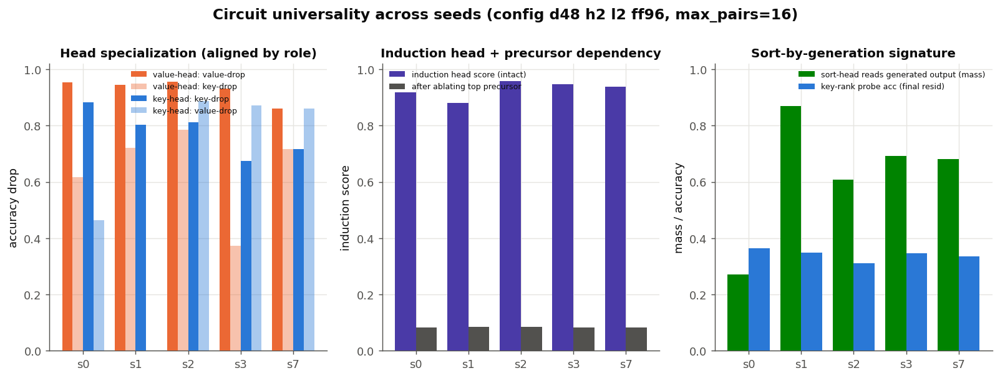
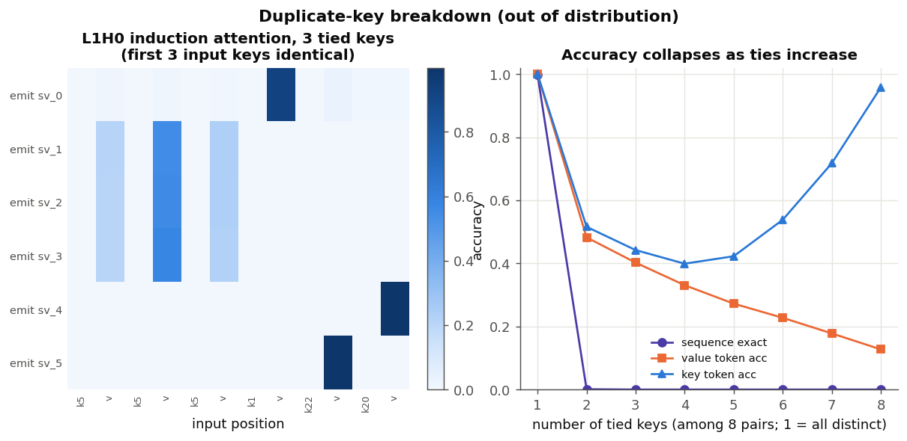

Synthesis
Universality, failures & honesty
Multiple seeds, where it breaks, and what we got wrong
We have a beautiful story about one trained network. The professional's next question is skeptical: is any of it real, or did we just narrate the accidents of one random seed? This lesson is about testing generality, finding where the model breaks, and being honest about what we got wrong.
Universality: train it again, from scratch
Every result so far came from one model. Weights depend on the random seed used to initialize training, so the single most important robustness check is to train fresh models with different seeds and ask which findings recur.

Across seeds the head indices permute — the induction head is "L1H0" in some seeds and "L1H1" in others. So findings must be stated by role ("the induction head"), never by address ("L1H0"). The value channel is a sharp, universal circuit; the key channel is a universal strategy (generate-and-threshold) but not one tidy head.
A gallery of all heads across all seeds and several inputs makes this concrete —
the value/induction head keeps its sharp shape in every seed while the sort work stays
diffuse. (See reports/sort-seed-gallery.md.)
Where it breaks
Understanding failure is understanding mechanism. Because the value channel routes by matching a unique key identity, it should break if keys are not unique. Feed it duplicate keys (never seen in training) and it does:

Two more, briefly: the model's rare errors are almost all inherited from key
selection — the value copy is nearly perfect, so a wrong value usually means a wrong
key upstream. And, as noted earlier, it never learned to stop (EOS was
outside the training loss), so left to run it just keeps sorting.
What we got wrong
Real analysis is iterative, and several confident claims were later overturned by better experiments. Keeping these in is not modesty for its own sake — the ways a mechanistic claim can be wrong are exactly the pitfalls you are learning to avoid.
- "The layer-0 MLP builds the key menu." Ablation showed it is essential for keys, so we said it builds the menu. Then a probe showed the menu is already assembled by layer-0 attention and the MLP does not improve it. Necessary ≠ the thing you assumed it does. (withdrawn)
- "The block-1 MLP does the comparison." A coarse probe located the answer "after block 1," which we read as the MLP. A finer probe separated attention from MLP and showed the readout is essentially linear at the attention output. (corrected)
- "The menu lives in
SEP." It is readable atSEP, but patching theSEPvector between inputs did not transplant the key set — the identities are distributed. Decodable is not the same as localized. (refined) - "Keys form a clean order axis." One CV protocol said r = 0.79, a stricter one said 0.30. Both are true of different questions (interpolation vs extrapolation); the honest answer is a distributed order code. (reconciled)
Notice the shape of every correction: a real but coarse signal was over-interpreted, and a sharper experiment split it apart. "Necessary" got read as "does X"; "decodable" got read as "used" or "localized." These two conflations are the most common way interpretability goes wrong. Guard against them.
With generality tested, failures mapped, and mistakes owned, we can step back and say what all of this means.